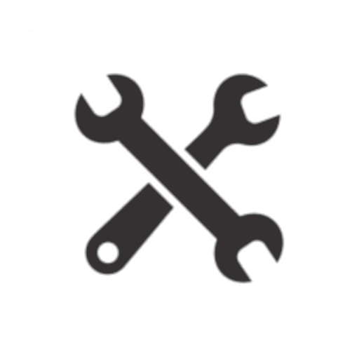

NauticAppMarine Engineering Hub for engine troubleshooting assistance, maintenance schedules, and spare part inventory. NautiGuard offers a collection of marine IoT projects focusing on safety and monitoring, including Real-Time GPS Tracking and Speed, Responsive Magnetic Heading (CoG), Position, Weather Full Forecast, Compass, and Logbook with automatically updated chart data.
NauticApp Features
Features
Marine Engineering Hub
Explore a comprehensive resource for engine maintenance and performance. Access troubleshooting assistance, maintenance schedules, spare part inventory, and real-time engine monitoring to enhance safety and efficiency on the water.
NautiGuard
Experience a collection of marine IoT projects focusing on safety and monitoring. Customize solutions with open-source projects like BilgeMonitor, EngineMonitor, Weather Station, and SafetyMonitor for a tailored boating experience.
Learn more about BilgeMonitor in the README. BilgeMonitor is a vital component of NautiGuard, designed to monitor bilge conditions on your boat. It provides real-time data on water levels, helping to prevent potential flooding or damage. By connecting BilgeMonitor to NauticApp, you can conveniently access and manage this crucial information. Stay tuned for more innovative projects like BilgeMonitor that will further enhance your boating experience!
Weather Forecast
Stay informed with the latest marine weather forecast. Access real-time information on changing wind speed, direction, and weather conditions, essential for safe navigation and informed decision-making on the water.
Responsive Magnetic Heading (CoG)
The app boasts a Responsive Magnetic Heading (CoG) feature, providing essential information for accurate navigation.
Readings
View the live position of your vessel and access important data such as Course Over Ground (COG), Speed Over Ground (SOG), and Heading in real-time. All of these readings are powered by the sensors in your device..
Logbook
The Logbook feature allows users to maintain detailed records of their boating activities, including position, speed, and personalized comments.
Exciting Developments Ahead!
We're actively working on implementing Artificial Intelligence (AI) for engine troubleshooting within the Marine Engineering Hub. This cutting-edge technology will provide advanced diagnostics and recommendations, enhancing your ability to maintain and optimize your boat's performance.
Stay tuned for even more features and innovations that will take your boating experience to the next level!
Smart Boating: A New Era of Boating Innovation
Welcome to NauticApp, where innovation meets the high seas! We are excited to introduce you to two of our game-changing features: Smart Boating.
NauticApp already empowers you with a comprehensive suite of features designed to enhance your sailing experience. With Real-Time GPS Tracking, you will always know your precise location, speed, and heading, ensuring you stay on course with unwavering confidence. Our Responsive Magnetic Heading (CoG) feature offers a responsive magnetic heading indicator, making navigation a breeze and helping keep you on the right path. Explore the open waters effortlessly with our intuitive Position and Chartplotter, and stay ahead of changing conditions with our Weather Full Forecast tool, enabling you to plan your journey with utmost confidence. Plus, our Compass and Logbook keep a digital record of your voyages and provide precise direction, adding convenience and reliability to your sailing adventures.
Now, let’s dive into the exciting world of Smart Boating within NauticApp.
Smart Boating: Your Ultimate Boating Companion
Smart Boating is the heart of NauticApp, revolutionizing the way you experience life on the water. It is your ultimate boating companion, seamlessly integrating cutting-edge technology into your maritime adventures, Smart Boating brings Marine IoT Integration to your fingertips, connect your microcontrollers and sensors to NauticApp for seamless data integration. Monitor, control, and optimize your boat’s systems like never before and very cheap!.
NautiGuard: Unleashing IoT Potential
NautiGuard is where the future of boating innovation unfolds. It’s a series of small IoT implementations, each designed to enhance your boating experience and integrate seamlessly with NauticApp. Here’s a glimpse of what NautiGuard has in store:
BilgeMonitor: Already discussed in detail in this other post, BilgeMonitor keeps your boat dry by monitoring water levels and automatically activating the bilge pump when needed.
Anemometer (Wind Sensor): Stay ahead of changing wind conditions with real-time wind speed and direction data.
Depth Sounder: Get insights into water depth, critical for safe navigation in varying terrains.
Temperature and Humidity Sensors: Keep tabs on onboard conditions for comfort and safety.
Engine Sensors: Monitor your engine’s vital statistics in real-time, ensuring optimal performance and early issue detection.
Safety Sensors: Enhance onboard safety with sensors designed to detect fire, gas leaks, and other potential hazards.
Stay tuned for more in-depth discussions on each NautiGuard project, and get ready to elevate your boating experience with NauticApp’s Smart Boating and NautiGuard features. The future of boating has arrived.
NautiGuard BilgeMonitor: Your Boat's Guardian
This ingenious device is your boat's guardian against unwanted water intrusions. Let's explore what the BilgeMonitor has to offer:
BilgeMonitor: Keeping Your Boat Dry
Real-Time Water Level Tracking
Say goodbye to worries about water accumulating in your boat’s bilge. The BilgeMonitor provides real-time water level tracking, keeping you informed about any rising water levels, no matter where you are.
Automatic Bilge Pump Control
When the BilgeMonitor detects an elevated water level, it takes action swiftly. It automatically activates the bilge pump, sparing you the hassle of manual intervention and ensuring your vessel stays dry.
Remote Access via NauticApp
You’re always connected to your boat, thanks to NautiGuard’s seamless integration with NauticApp. Monitor your bilge remotely, receive alerts, and take control from anywhere in the world using your smartphone or tablet.
Peace of Mind, Always
With the BilgeMonitor on board, you can enjoy your boating adventures with peace of mind. Whether you’re at the helm or miles away, your boat’s safety is in good hands.
Stay tuned for more NautiGuard projects, each designed to enhance your boating experience. The BilgeMonitor is just the beginning of a new era of boating safety and convenience.

Marine Engineering Monitoring: Elevate Your Boat's Performance
Set sail into the future of boating with NauticApp's Marine Engineering Monitoring feature. This groundbreaking addition takes your boat's performance and safety to the next level. Let's explore what Marine Engineering Monitoring has in store:
Real-Time Engine Data
Keep a watchful eye on your boat’s heart - the engine. Marine Engineering Monitoring provides real-time data on vital engine statistics. From RPM to temperature and oil pressure, you’re always informed about your engine’s performance.
Proactive Maintenance Schedules
Say goodbye to guesswork when it comes to engine maintenance. NauticApp’s intelligent system creates proactive maintenance schedules based on real-time data and manufacturer recommendations. Keep your engine running smoothly.
Fuel Consumption Insights
Optimize your fuel consumption with detailed insights. Marine Engineering Monitoring tracks fuel usage and efficiency, helping you make informed decisions that save both fuel and money.
Diagnose Engine Health
Don’t wait for issues to become problems. With Marine Engineering Monitoring, you can diagnose engine health early. Receive alerts for potential issues and take action before they escalate.
IoT Sensor Integration
Connect your microcontrollers and sensors to enhance your boating experience. Monitor additional aspects of your boat’s systems, ensuring everything runs seamlessly.
In-Depth Safety Measures
Safety is paramount on the water. Marine Engineering Monitoring includes safety sensors to detect fire, gas leaks, and other potential hazards. Enjoy peace of mind knowing your boat is equipped with advanced safety features.
For older marine engines, it is crucial to select sensors that align with the engine’s design and technology. While contemporary engines often come equipped with integrated sensors and electronic control systems, their older counterparts may lack such features. Below, we provide a list of common sensors that can be retrofitted to older marine engines to enhance their monitoring capabilities. Please note that additional models and detailed information will be updated soon:
Temperature Sensor (Coolant Temperature): This sensor measures the engine’s coolant temperature and is typically installed within the coolant system. It offers valuable insights into engine temperature, aiding in the prevention of overheating.
Oil Pressure Sensor: The oil pressure sensor actively monitors the engine’s oil pressure, identifying low oil pressure, a critical factor for engine health. It is commonly situated near the oil pump or within the oil system.
Tachometer (RPM Sensor): Although not a conventional sensor, a tachometer can be added to monitor engine RPM (revolutions per minute). This is essential for maintaining the engine within its optimal operational range.
Fuel Flow Sensor: This sensor gauges the rate of fuel consumption, allowing boat owners to track fuel efficiency and detect unusual fuel consumption patterns.
Exhaust Gas Temperature (EGT) Sensor: EGT sensors keep a close watch on exhaust gas temperatures, aiding in the optimization of fuel-to-air ratios and the detection of issues like excessive exhaust temperatures.
Voltage and Current Sensors: These sensors oversee the engine’s electrical system, ensuring it operates within safe voltage and current parameters. They prove especially vital for older engines with more basic electrical setups.
Pressure Sensors (e.g., Oil Pressure, Fuel Pressure): Depending on the engine’s configuration, pressure sensors may be necessary to monitor various systems such as oil pressure or fuel pressure.
Engine Hours Counter: Although not a traditional sensor, an engine hours counter plays a pivotal role in tracking engine usage. It assists in scheduling maintenance based on engine runtime.
Thermocouples: These sensors are capable of measuring temperatures at various points within the engine, including exhaust and cylinder temperatures.
Safety Sensors: Older engines can benefit from safety sensors designed to detect issues like engine overheating or gas leaks. These sensors can trigger alarms or shutdown procedures, averting potential damage or accidents.